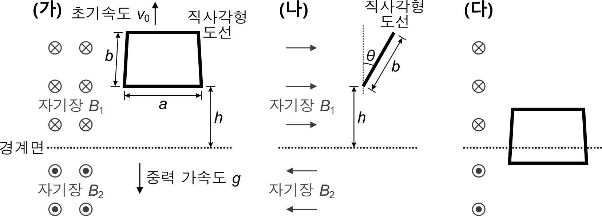

문제 4
한 수평 경계면을 기준으로, 위쪽 영역에는 균일한 자기장 \(B_1 = 1\) T가 종이면 안으로 들어가는 방향으로, 아래쪽 영역에는 균일한 자기장 \(B_2 = 1\) T가 종이면 밖으로 나오는 방향으로 걸려있다. 위쪽 영역에 질량 200 g, 저항 3 \(\Omega\), 세로 \(b = 40\) cm, 가로 \(a = 50\) cm인 대전되어 있지 않은 균일한 직사각형 도선이 있다. 도선의 가로변은 그림 (가)처럼 경계면과 평행하면서 자기장에 수직이고 세로변은 그림 (나)처럼 연직 방향과 각도 \(\theta = 30°\)를 이루며 기울어져 있다. (그림 (나)는 그림 (가)를 오른쪽 옆에서 본 측면도임)
도선의 아래쪽 가로변과 경계면의 거리가 \(h = 1\) m가 되는 위치에서 도선을 연직 위로 초기 속도 \(v_0\)로 회전이 일어나지 않도록 던졌고, 얼마 후 그림 (다)처럼 도선이 경계면에 걸쳐있는 동안에는 등속도 운동을 하는 것이 관찰되었다. (중력 가속도는 \(g = 10\) m/s\(^2\)이고, 공기저항과 도선의 굵기는 무시할 수 있다고 하자.) (총 6점)
(1) 도선이 경계면에 걸쳐있는 동안에 등속도 운동을 하게 되는 원리를 정성적으로 설명하고, 도선의 초기 속도 \(v_0\)를 구하시오.
(2) 도선을 연직 위로 던진 직후부터 도선의 모든 부분이 경계면 아래쪽 영역으로 완전히 넘어가기까지 도선에서 발생한 총 열에너지는 얼마인가?
